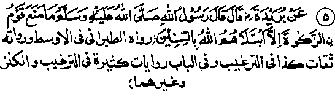

Chapter Five · Section (b): Ahadith threatening punishment for non-payment of Zakaat
3. Afflictions consequent upon withholding Zakaat

Hadith 5
Rasulullah Sallallaho alaihe wasallam has said, ‘If some people withhold Zakaat (refuse to pay it), Allah Ta'ala inflicts famine on them".
Note: Nowadays, the calamity of famine has become a great problem and thousands of plans are under way to save mankind from a world famine, though most of these plans seem to produce little result The fact is that, when Allah Ta'ala sends a calamity to punish men for their sins, no power on earth can prevent its onslaught. Men may form thousands of plans to check its advance, frame numerous laws (and call the governments for aid), but a thing decreed by the Sovereign Lord of the Universe must come to pass, unless He wills it otherwise. Allah Ta'ala has revealed to us the real malady and told us about its proper treatment and cure. Now, if we wish to redeem suffering we shall have to follow the proper remedy. It would be utter folly to indulge in the very acts that cause the disease and then complain of its spreading more rapidly.
Rasulullah Sallallaho alaihe wasallam has specifically described for his Ummah how evil pursuits cause specific calamities and afflictions in this world; the humble author has briefly recounted all this in his booklet, ‘al-I’tidaal’. As this is beyond the scope of the present book, readers may refer to that booklet and see how gravely concerned Rasulullah Sallallaho alaihe wasallam was about his people on that account, and how he warned them against all such evil practices, saying, in effect:
"When my Ummah falls into such and such evils; they will be afflicted with calamities like: violent windstorm, men being swallowed up by the earth, metamorphosis (faces transformed into evil shapes), earthquakes, pelting with stones from the skies, the domination of enemies over the Muslims, plagues and pestilences, mutual slaughter and bloodshed, with-holding of rains, storms, the hearts becoming intimidated and awed by unknown fears, the supplications of the pious not being accorded acceptance, etc."
Rasulullah Sallallaho alaihe wasallam enumerated these afflictions and misfortunes fourteen hundred years ago, together with the particular evil deeds that cause each of these. The warning was given long ago and, today, we have tested the truth of these sayings by experience. Today the predictions are coming true, in exact accordance with the minutest details given in the Ahadith. Would that we understood the true significance of the sayings of Rasulullah Sallallaho alaihe wasallam, whose heart was full of love and compassion and who was sent as a mercy, not only for the Muslims, but for all mankind; following the rules of conduct laid down by him, is extremely beneficial for all created being. When the Muslims themselves do not set great value on these revelations, in spite of claiming to be true Muslims, how can we blame the non-Muslims for not knowing that Rasulullah Sallallaho alaihe wasallam has taught us golden rules for protection against afflictions and calamities of this world. Even today, if mankind hold fast to these excellent forms of conduct and moral principles, they can win salvation and protection against afflictions. Very often, the non-Muslim patients get themselves treated by the Muslim doctors or physicians and the Muslim patients often go to non-Muslim doctors for treatment. If only, people acted according to the rules prescribed by Rasulullah Sallallaho alaihe wasallam, who was undoubtedly the wisest of all wise men, what a bliss would it be to live in the world, which will become an abode of peace forever.
At this point, I think it worth referring to two more Ahadith, which contain warnings by Rasulullah Sallallaho alaihe wasallam: Ibne Umar Radhiallaho anho relates that Rasulullah once said, ‘O Fraternity of Muhajireen, there are five (dreadful) sins; if you fall into these’ and I take refuge in Allah from the evil of these sins lest you fall into them (you will face horrible disasters). Firstly, when people openly indulge in acts of shamelessness and fornication, they will be punished with plague and such diseases as were never heard of before. Secondly, when people begin to give false measure in their business dealings, they will be subjected to starvation, hardships and oppression by rulers. Thirdly, if people stop paying Zakaat, rain will be with held from them and, were it not for the animals, not a single drop of rain would fall upon them (as animals are innocent creatures of Allah Ta'ala, a little water would be showered for them). Fourthly, the community that does not honour its contracts and treaties will be condemned to domination by other nations, who will rob them of all their wealth and belongings. Fifthly, a nation that enforces laws in contravention of (i.e.opposed to) the law of Allah, will be torn asunder by disruption and internal fighting." (Targheeb). If we consider these carefully, we shall see that we are suffering from most of the evils described in the Hadith and, in consequence thereof, most of the calamities mentioned therein have actually befallen us.
Ibne Abbas Radhiallaho anho reports that once Rasulullah Sallallaho alaihe wasallam said, "Five things are in return for five acts. When someone asked what this meant, he explained, When people are treacherous about the covenant they have made, their enemies are given power over them; when people judge and rule in contravention of the commandments of Allah, death becomes prevalent among them; when people do not pay Zakaat, rains are withheld from them; when people give short measure and weight, the produce (of their lands, etc.) becomes scanty and they are afflicted with famines". (Targheeb). Most probably, the Hadith has been narrated in an abbreviated form. That is why the narrator has mentioned only four things in the explanation. This Hadith says that those who frame laws against the canon of Allah Ta'ala are punished with frequent deaths; the preceding Hadith states that the offence is punished with causing fighting among the members of the society. The two Ahadith may be understood to describe two different modes of punishment. Or, taken together, both may be read as meaning frequent deaths from mutual fighting, which has indeed become a common sight nowadays.
Both Ali and Abu Hurairah Radhiallaho anhuma have reported Rasulullah Sallallaho alaihe wasallam as saying, in effect, When people of my Ummah do fifteen things (among these he numerated): when Zakaat is looked upon as a penalty (i.e. people pay Zakaat with a heavy heart, as though it is a penalty or, alternately, when the collectors collect Zakaat like a tax), then look for violent windstorms, earth quakes, men being swallowed up by the earth, metamorphosis, stones being pelted from the skies, and calamities following one another in rapid succession, like beads of a rosary falling one after the other when its string is cut" I have given these Ahadith, in full, in my book, ‘al-I‘Tidaal' and detailed all the fifteen evils that are punished with these severe inflictions. In that book, I have also quoted other Ahadith on the subject, but here, I have made a passing reference to the Ahadith as they also mention withholding of Zakaat